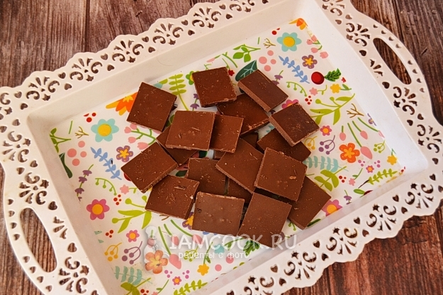
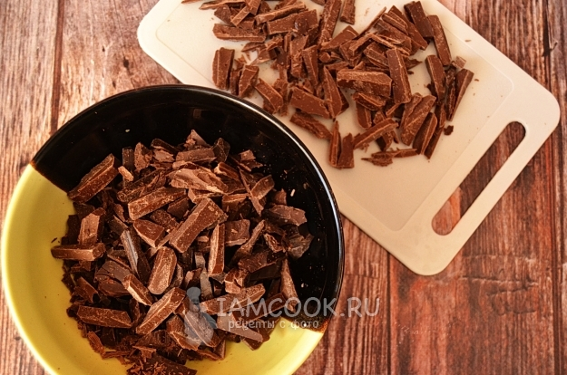
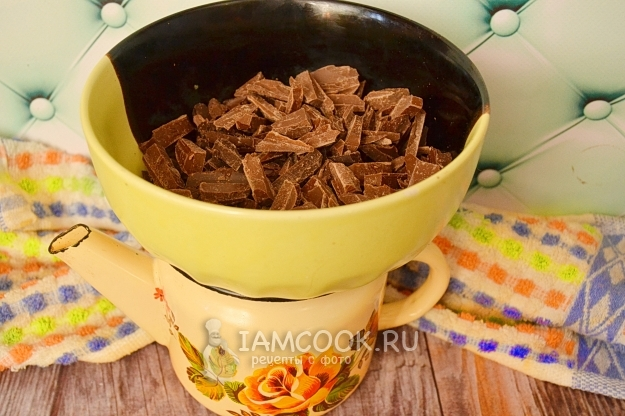
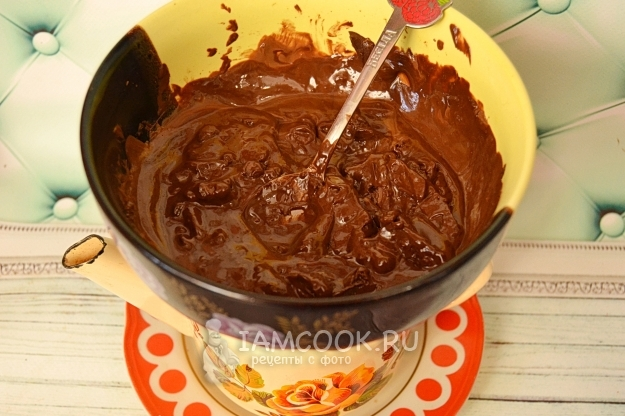
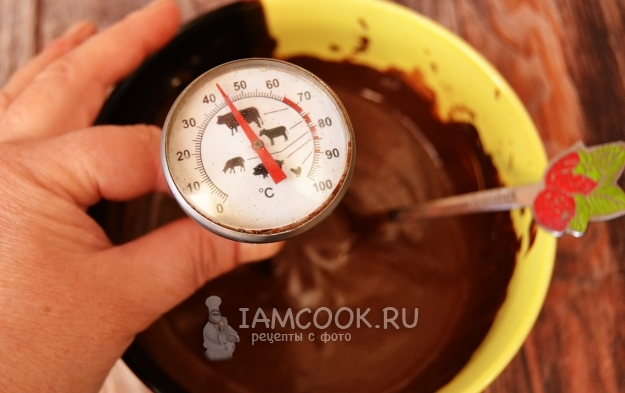
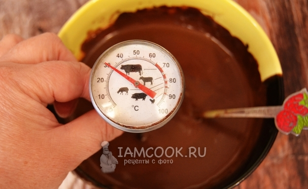
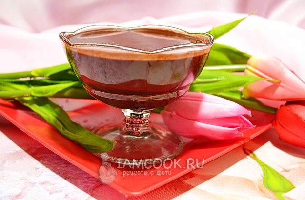

Пошаговый рецепт с фото
При изготовлении домашних корпусных конфет «Грецкий орех в шоколаде» мне пришлось столкнуться с таким понятием, как темперирование шоколада, то есть для производства конфет нам нужен не просто растопленный шоколад, а шоколад темперированный. Что это такое и для чего это нужно?
Темперирование — это последовательный нагрев и охлаждение шоколада, с целью задать ему кристаллическую решетку. Ну а темперировать шоколад нужно для того, чтобы готовые изделия были хрустящими, глянцевыми, быстро застывали, легко выходили из формы и лучше хранились.
Для горького, белого и молочного шоколада температуры нагрева и охлаждения будут разными:
- горький шоколад мы нагреваем до 45-48 градусов, затем охлаждаем до 27 градусов, и затем снова нагреваем до 32 градусов
- молочный шоколад необходимо нагреть до 45 градусов, затем остудить до 26, а затем нагреть до 31 градуса
- белый шоколад нужно нагреть до 45 градусов, затем охладить до температуры 25-26 градусов и снова нагреть до 29-30 градусов
Плавить шоколад удобно на водяной бане или же в микроволновке. А вот процесс охлаждения можно делать разными способами: перемешивая шоколадную массу на камне, перемещая шоколад в холодную миску, методом посева. В домашних условиях, когда приходится работать с небольшим количеством шоколада, удобнее всего охлаждать массу именно методом посева или затравки.
Для этого плавим не весь шоколад, а три четверти от общей массы. Когда шоколад расплавится, в эту массу добавляем целый шоколад и перемешиваем. Целые кусочки зададут всей массе процесс кристаллизации. Если уже весь добавленный шоколад растопился, а температура еще не опустилась, то добавляем еще шоколад, пока масса не охладится до нужной температуры.
Ну, а далее нагреваем шоколад до рабочей температуры.
Сегодня я буду темперировать молочный шоколад. Как темперировать шоколад горький, я уже рассказывала. В случае темного шоколада я добавляла еще и какао-масло для лучшей плавкости. В молочный шоколад можно не добавлять, но немного какао-масла все же лучше иметь, для того случая, если шоколад окажется с низкой текучестью.
Итак, темперирование шоколада в домашних условиях...
Шоколад разделим на 2 части. Четверть мы будем использовать для затравки. Чтобы процесс происходил быстрее, кусочки разрежем. Можно этого не делать, но так удобнее.
Для расплавления я делаю вот такое сооружение: в чайничек наливаю воду, сверху ставлю миску с шоколадом. Дно миски не должно соприкасаться с водой. Ставим наше сооружение на огонь. Когда вода закипит, огонь уменьшаем.
Шоколад быстро начинает плавиться. Все время, пока мы плавим шоколад, помешиваем его.
Доводим до нужной температуры в 45 градусов. Лучше всего пользоваться бесконтактным термометром — пирометром.
По достижении температуры в 26 градусов начнут образовывать кристаллы. Масса станет более тягучей. Можно проверить, удался ли процесс кристаллизации. Для этого на ложку или на пергамент нанесем тонкую полоску шоколада. Если в течение пяти минут полоска застывает, то процесс темперирования произошел. Но это актуально, если в помещении температура - не выше 15-18 градусов.
Темперирование шоколада в домашних условиях завершено. Можно делать из него шоколадные плитки с различными наполнениями, шоколадные фигурки в формах, конфеты.
